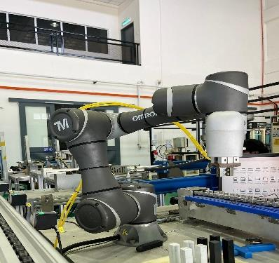
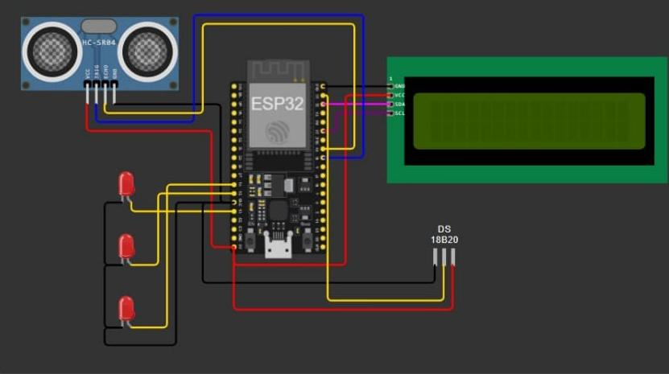
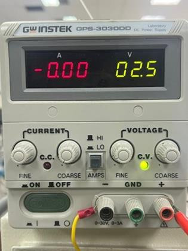

FMS: VAC Car Headlamp Installation
Problem Statement: Integrating PLC, collaborative robot, HMI, and conveyor subsystems safely with clear commissioning verification and fault tracking.
Role: Report / Helper & Commissioning Engineer (Group Project)
Tools Used: Omron PLC, Omron TM5-700 Cobot, Mitsubishi HMI, VFD & Conveyor
Outcome: Completed prestart inspection, risk analysis, I/O mapping, operational sequence, and deviation/punch list documentation.
View Commissioning Report

Room Ambient Monitor (IoT)
Problem Statement: Monitoring room temperature, humidity, and door proximity continuously with threshold alerts and historical logging.
Role: System & IoT Developer (Group Project)
Tools Used: ESP32, DHT11, HC-SR04 Ultrasonic, LCD, Google Sheets, Looker Studio
Outcome: Automated time-based sensor logging to Google Sheets, alarm code status (0, 101, 201), and visual dashboard monitoring.
View Project Report

PLC Analog Control & Signal Dispatcher
Problem Statement: Converting and dispatching analog voltage signals accurately with mode selection, voltage-level lamps, and emergency interlocks.
Role: PLC Programming & Testing Student
Tools Used: Omron CJ2M, CJ1W-MAD42 Analog Module, CX-Programmer, Ladder & Function Block
Outcome: Verified analog-to-digital scaling and implemented Manual/Auto output control, lamp indicators, and E-Stop safety logic.
View Lab Report